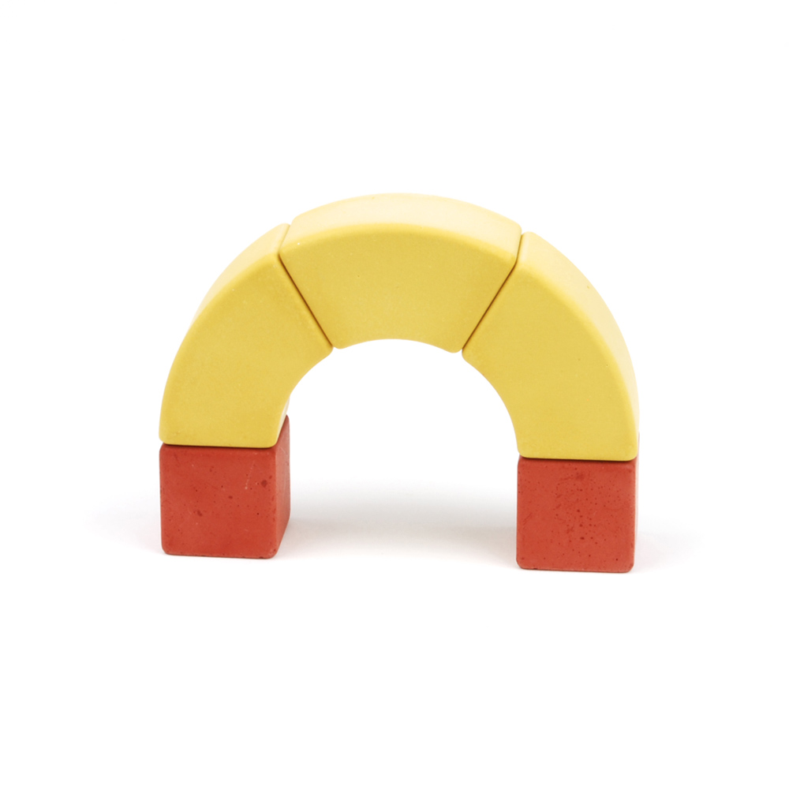
01
Kleiner Bogen
Drei Steine, der erste freistehende Bogen.
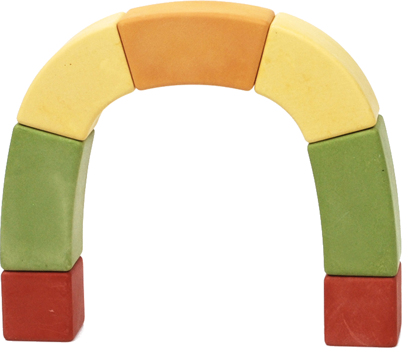
Kein Kleber, kein Klick: kaju-Steine tragen sich selbst, wenn die Form stimmt. Finde heraus, wie.
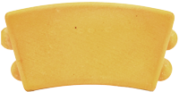
Die Fuge führt.
Noppe trifft Mulde: Sauber gesetzt verzahnen sich die Steine formschlüssig – mit gerade mal 0,2 mm Spiel. Das verhindert Verrutschen. Tragen? Muss der Bogen selbst.
Eine Hand hält, die andere setzt, dann greifen beide um. Dein Daumen baut mit: Scroll bewegt die Hände.
Tipp auf die Bühne: Setz Stein für Stein.
Jeder Stein drückt auf den nächsten. Druck hält die Kette zusammen – Zug gibt es in einem Bogen nicht.
Der Moment, für den gebaut wird: Die Hände gehen auf – und der Bogen bleibt. Dein Kind sieht sofort: Das habe ich herausgefunden.
Dieselben Steine, wachsende Aufgaben – bis zum eigenen Bauwerk.
Bauen ist die halbe Spielbreite: Dieselben Steine legen Bilder, rollen Murmeln und bauen ganze Welten.
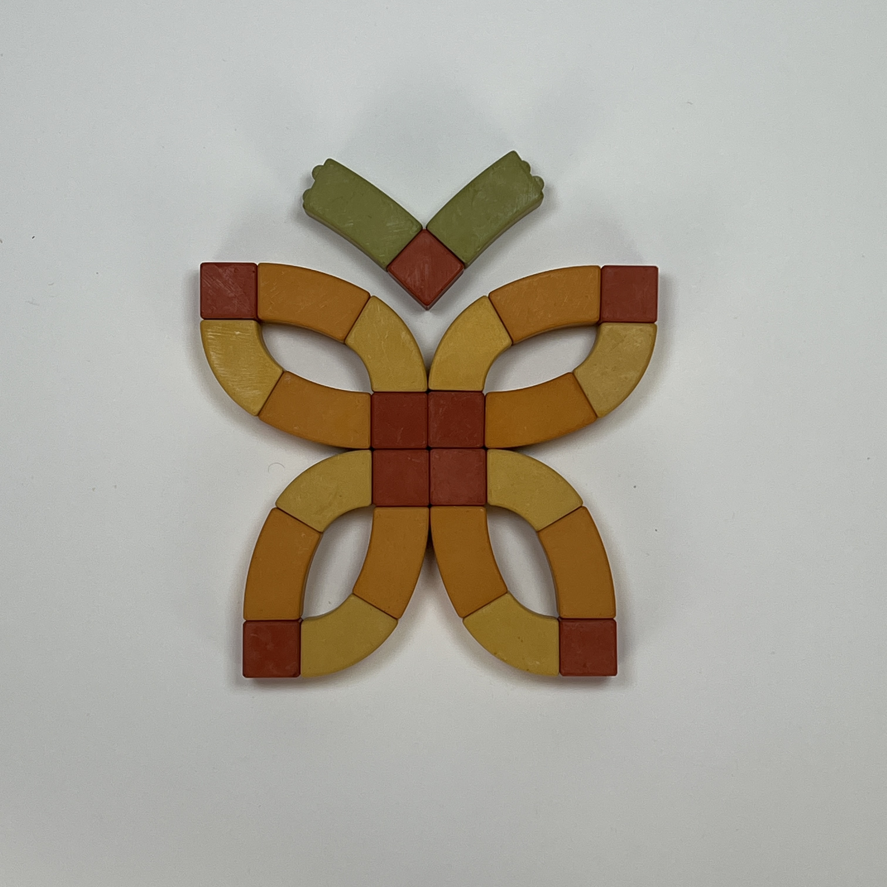
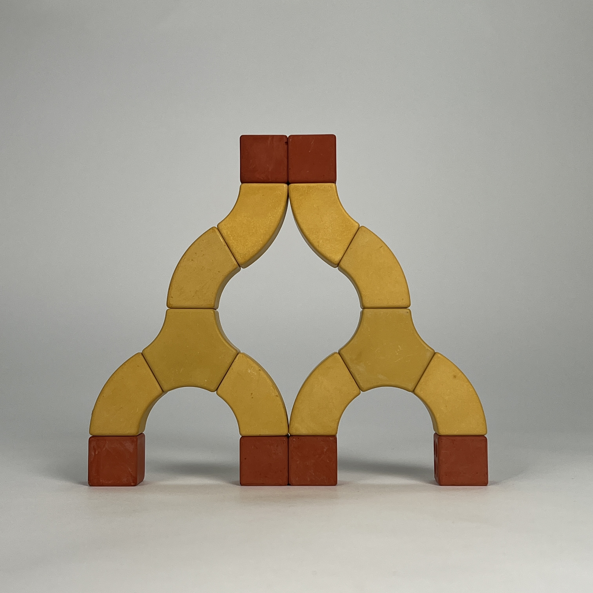
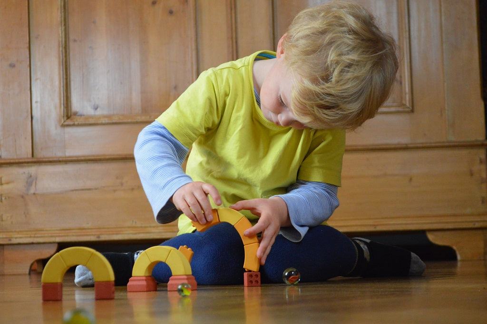
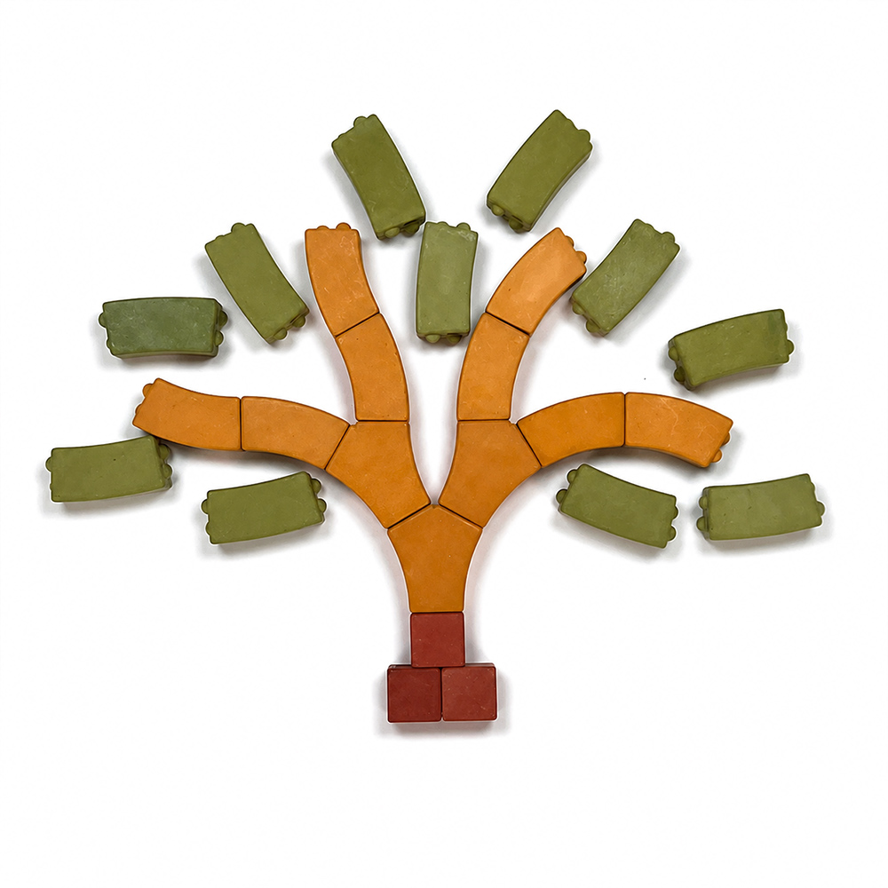
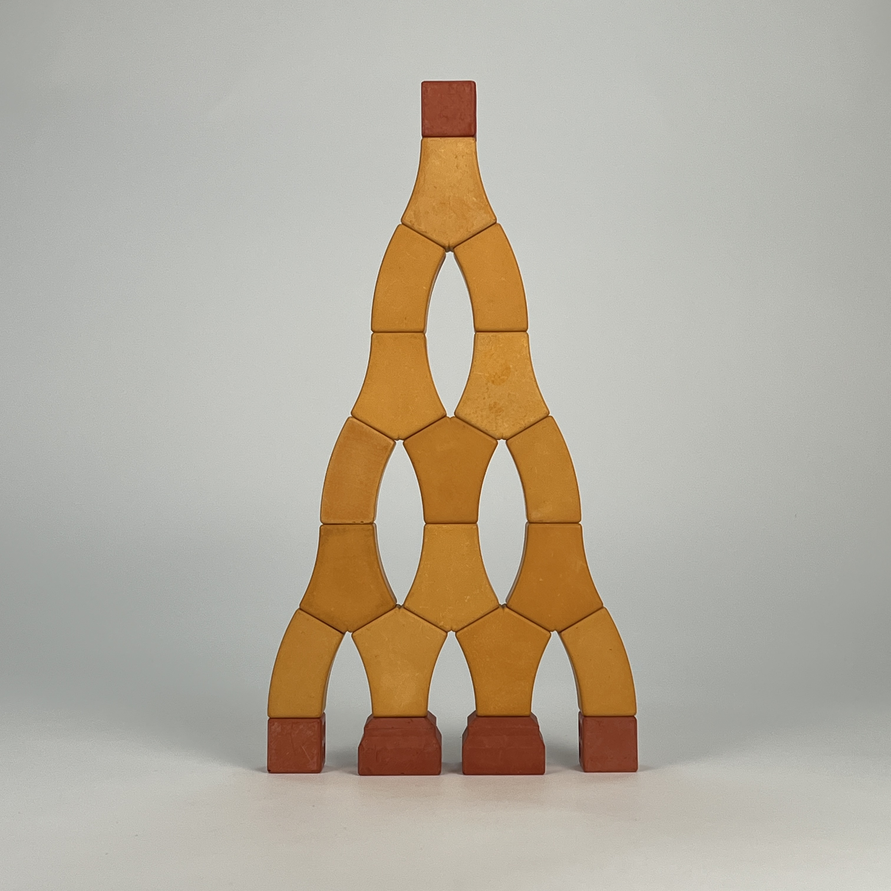
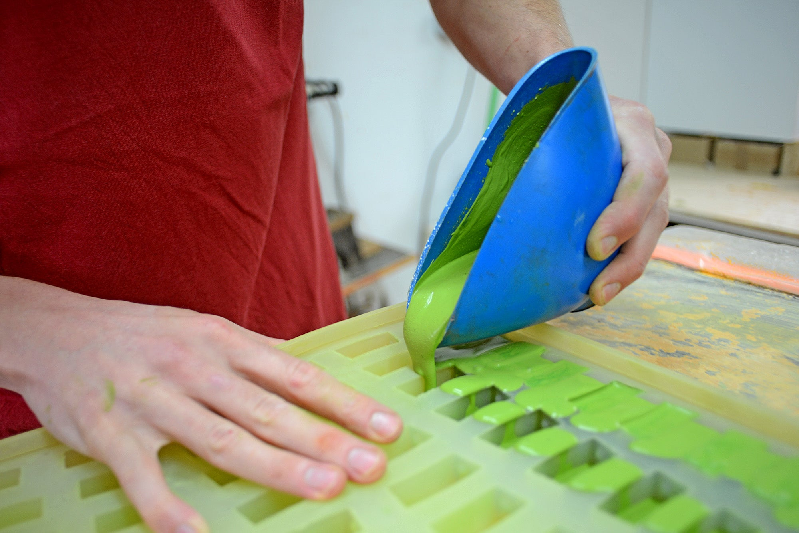
Hier echtes Video: Gießen, Entformen, Schleifen (20–30 s)Ich habe das Bogenprinzip entwickelt, weil mich interessiert hat, wie alte Steinbögen tragen: über Form und Druck, nicht über Klebstoff. Die Fuge hilft beim Setzen – das Herausfinden bleibt beim Kind.
Naturhartgips, weil er massiv und ehrlich in der Hand liegt. Gefertigt in kleinen Serien, jeder Stein entformt, geschliffen und geprüft.
Viel Spass beim Tüfteln, euer Kai.
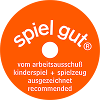
Das kajuBOGENBAU Starter-Set ist ausgezeichnet mit »spiel gut« und »Bewegte Innovation« der Uni Würzburg.
Spiel, das trägt. Auch ohne dich.
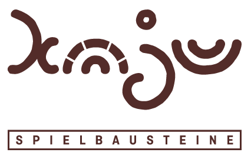